Examples#
Runnable demonstrations of General Relativity’s classic results, from the Schwarzschild and Kerr black-hole solutions through cosmology and gravitational-wave astrophysics.
Each script in this gallery is self-contained and can be run directly with
python examples/relativity/<section>/<script>.py. Every script also
carries an RST module docstring as its title/description and uses # %%
markers to split narrative text from code, which is exactly what
Sphinx-Gallery renders into the pages below – the script is the source of
truth for what you see, not a copy of it.
Sections#
schwarzschild – the non-rotating black hole: light bending and the photon-sphere shadow, perihelion precession (the anomaly that first confirmed General Relativity), tidal “spaghettification,” and the GPS relativistic correction you carry in your pocket.
kerr – the rotating black hole: frame dragging, the ergosphere, the Penrose process, and the Kerr shadow and redshift.
spacetime_geometry – curvature itself: validating the curvature engine against Einstein’s vacuum field equations, Flamm’s paraboloid (gravity as curved geometry rather than a force), and Kruskal-Szekeres/Penrose-Carter diagrams of spacetime’s true shape.
lensing – Einstein rings, multiple images, and microlensing.
neutron_star – solving the TOV equations for the neutron-star maximum mass.
cosmology – the expanding universe: Hubble’s law and the Friedmann equations.
gravitational_waves – the Hulse-Taylor binary pulsar’s orbital decay, the first (indirect) evidence for gravitational waves, and the GW150914 binary-merger chirp, the first direct detection.
interactive – interactive Plotly visualizations of orbits and the black-hole shadow.
Cosmology#
FLRW cosmic expansion and the distance-redshift relation.
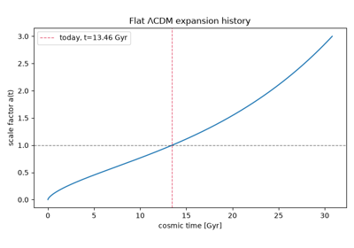
The expanding universe: Hubble’s law and the Friedmann equations
Gravitational waves#
Binary black hole and binary neutron star inspiral chirps and ringdown.
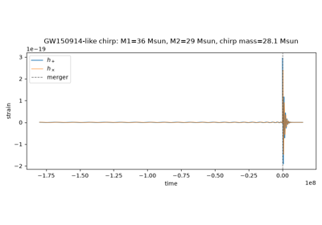
GW150914: the first direct detection of gravitational waves
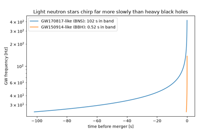
GW170817: the first binary neutron star merger
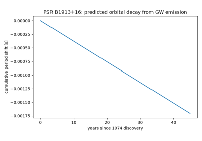
The Hulse-Taylor binary pulsar: the first (indirect) evidence for gravitational waves
Interactive Plotly visualizations#
Pan/zoom/rotate-enabled 3D orbits and shadow images.

Kerr black holes#
Frame dragging, the ergosphere, and the Penrose process.
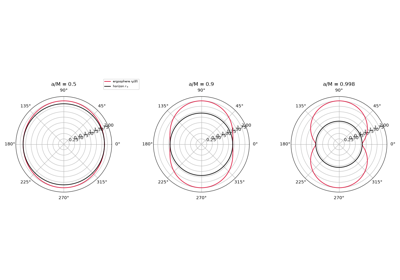
Frame dragging and the ergosphere of a Kerr black hole
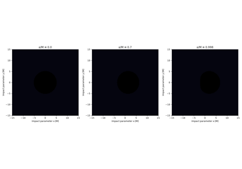
The Kerr shadow: a rotating black hole’s asymmetric silhouette
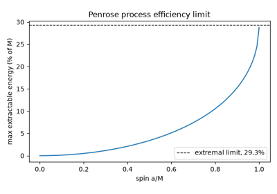
The Penrose process: extracting a black hole’s rotational energy
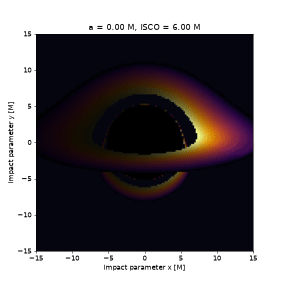
Animating the shadow: a black hole spun up from rest
Gravitational lensing#
Einstein rings, multiple images, and microlensing magnification.
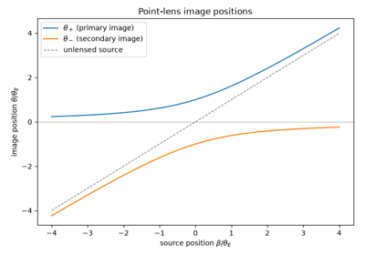
Einstein rings, multiple images, and microlensing
Neutron stars#
The Tolman-Oppenheimer-Volkoff equations and the maximum neutron star mass.
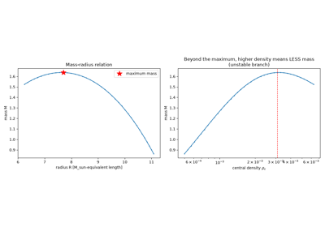
The neutron star maximum mass: solving the TOV equations
Schwarzschild black holes#
Orbits, perihelion precession, light bending, the photon sphere, and a radial infall’s finite proper time to the horizon.
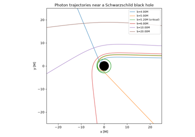
Light bending, the photon sphere, and the black hole shadow
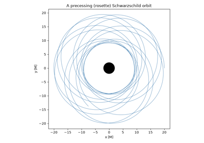
Perihelion precession: the anomaly that first confirmed General Relativity
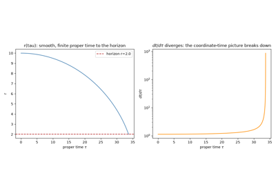
Penrose’s singularity theorems: finite proper time, divergent coordinate time
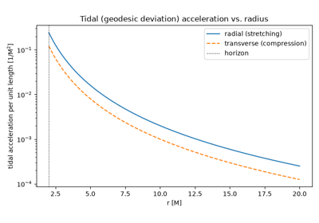
Spaghettification: tidal forces near a black hole
Spacetime geometry#
Curvature, embedding diagrams, and the global causal structure of Schwarzschild spacetime.
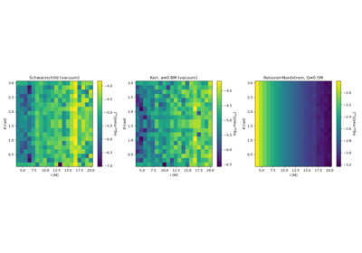
Validating the curvature engine: Einstein’s vacuum field equations
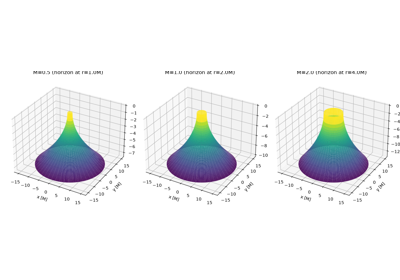
Flamm’s paraboloid: gravity as curved geometry, not a force
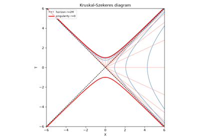
Kruskal-Szekeres and Penrose-Carter diagrams: the true shape of spacetime